Metrics Monitoring at Scale
Lab Goal
This lab helps you understand some of the pain points with Prometheus that arise as you start to scale out your observability architecture and start caring more about reliability.
Metrics at Scale - Where we left off
Remember we talked about monitoring at scale back in the introduction? To refresh, we left it
with each Prometheus server operating independently and storing data locally without clustering
or replication. When you need to set up high availability (HA), for example with alerting, for
your observability solution you'll quickly discover the design has limits:

As promised, let's take a look at the storyline when you start to scale your cloud native
observability...
Single instance - Everyone starts simple
Getting into some of the pain points with Prometheus that arise as you start to scale out your
instances, or you start caring more about reliability. Initially when you start out, all data
by default goes into the single Prometheus instance:
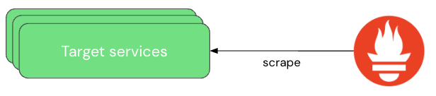
Single instance - Adding alerts and dashboards
You add in alerts and visualization features and your cloud native observability is working
great:
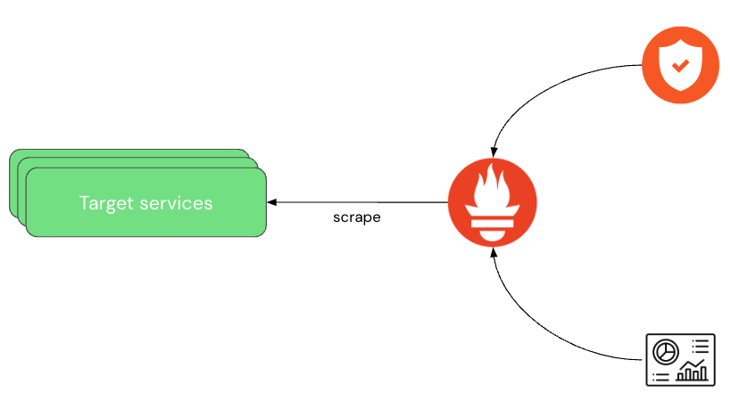
Single instance - Failure is absolute
So what happens if Prometheus goes down, for whatever reason:
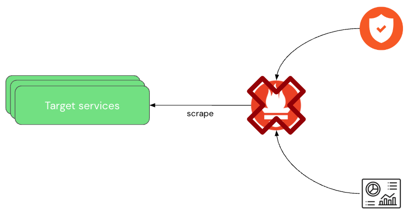
Single instance - Losing real time monitoring
In this case you not only lose active real time monitoring (scraping) of your services...
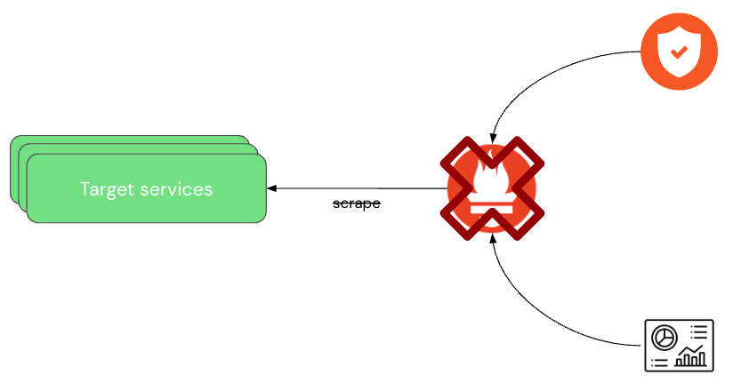
Single instance - Losing alerting ability
You also lose the ability to generate alerts...
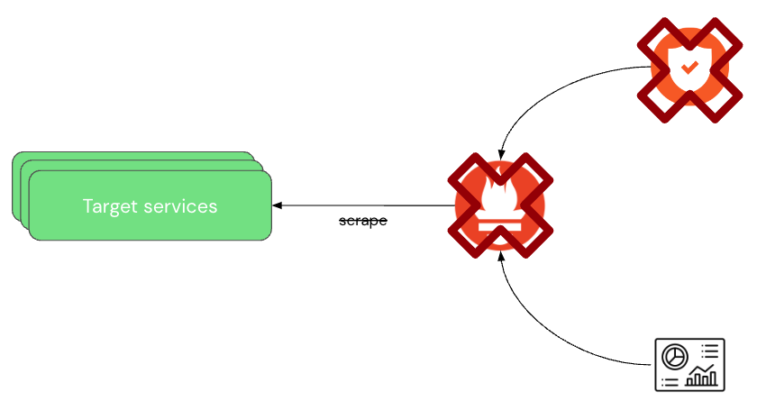
Single instance - Losing historical views
And you lose visibility into what is going on, along with access to all of your
historical data. This is really a significant point of failure with the out-of-the-box setup:
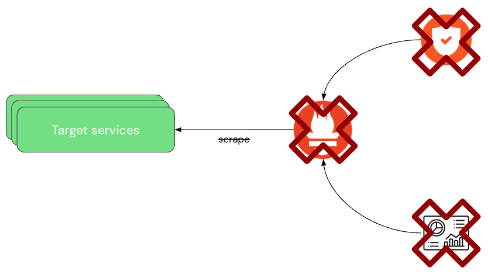
Replication - Fixing scaling with replication?
Recommend solution is to run multiple instances that both scrape the same endpoints. Let's
see what this looks like, starting with one Prometheus instance again:
Replication - Duplicating metrics data
With two instances, if one goes down you still have a copy of your metrics:
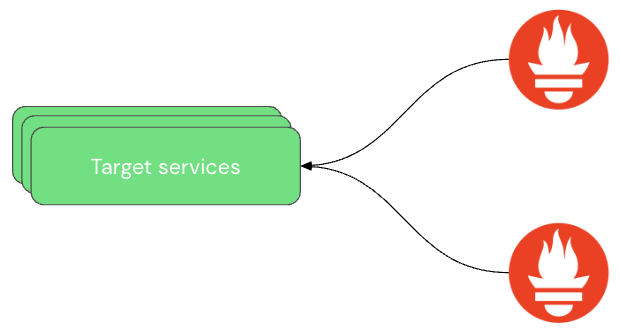
Replication alerting - Alerting in replication
Adding in alerting seems straight forward. Note that the alert manager component is a single
binary, so adding it in once and letting it handle both instances might seem right, but this
won't work:
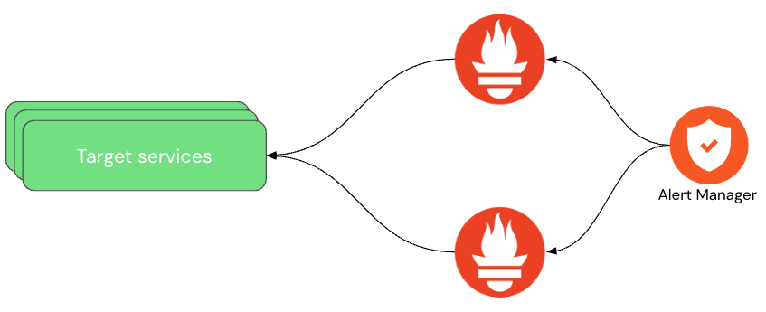
Replication alerting - Results missing alerts
The alert manager would only see one alert if both Prometheus instances were to alert:
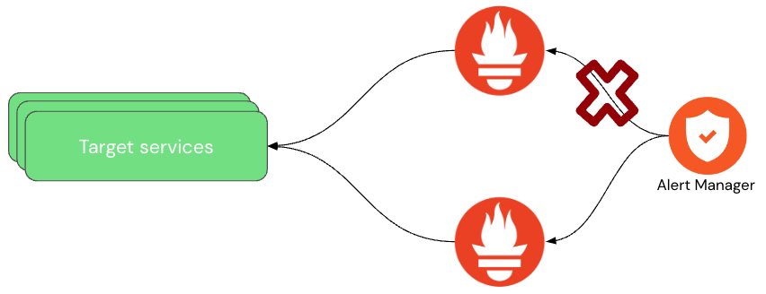
Replication alerting - Adding more alert managers
You are going to need two alerting instances, and they would trigger alerts for their respective
Prometheus instances:
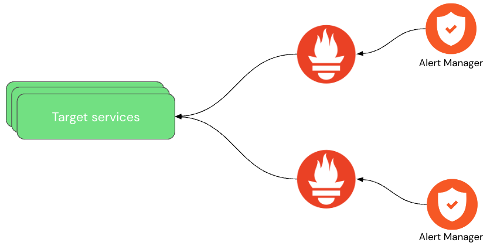
Replication alerting - Coordinating alert managers
They would coordinate between each other so if both Prometheus instances were to alert, then you would
only see one alert:
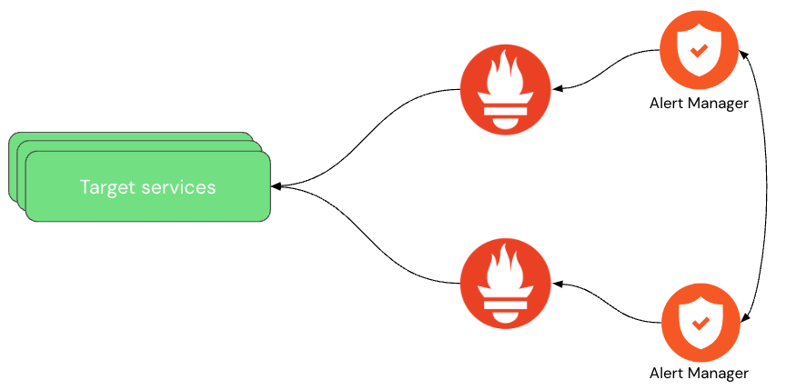
Replication visualization - What about dashboards?
What about dashboards when you start to use Prometheus replication? Let's start here with the
single Prometheus instance, and it's visualization dashboards, and then start adding in more
instances to uncover the issues involved:
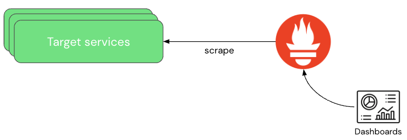
Replication visualization - Adding second instance
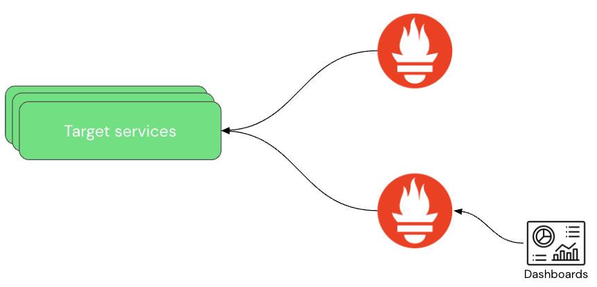
Replication visualization - Dashboard per instance
When comes to viewing data from a dashboard, it becomes trickier. Have you figured out the problem
as this scales? First off, each dashboard is tied to an instance, and you have to go to the
right dashboard to get the right instance data. If one instance fails, that means it's
dashboard fails (or is empty). This does not work at scale:
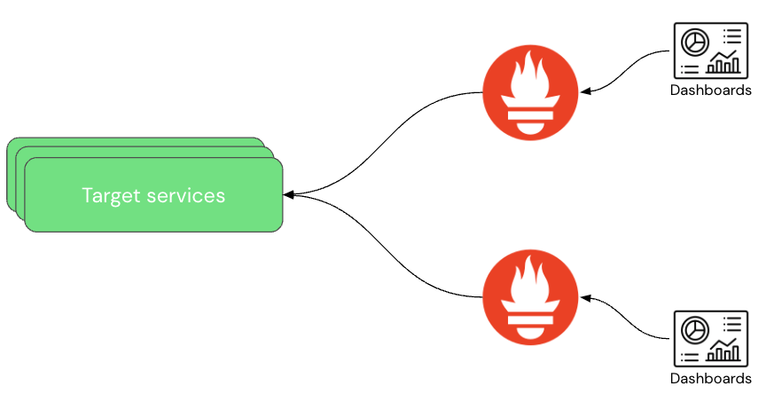
Replication visualization - Back to drawing board
Starting back with replicated Prometheus instances, what can we now do to solve the problem
of so many dashboards having to be accessed to find our instance metrics data?
Replication visualization - Load balancing instances
A traditional solution that typically works well is putting a load balancer between the instances:
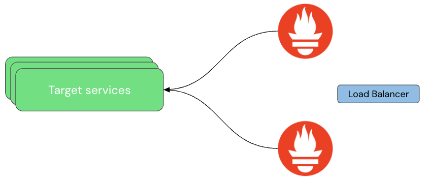
Replication visualization - Presenting single data view
This generally works for reliability in the sense that you get one copy of the data:
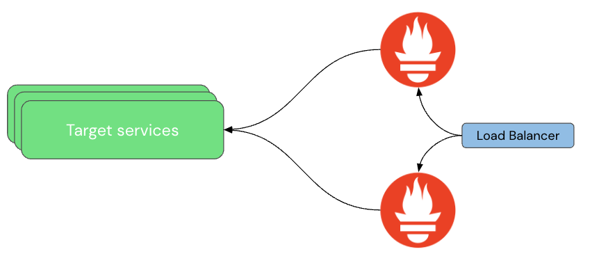
Replication visualization - Always on dashboards
Point the dashboard instance to the load balancer and read requests get balanced between the
Prometheus instances, so that if one goes down, you’re still able to fulfill the requests:
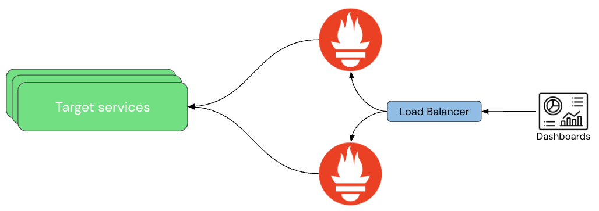
Replication visualization - Another dashboard problem
As stated, this generally works for reliability of your data. The problem you'll start to
notice sooner or later is, that if you are doing rolling restarts of your Prometheus instances,
you’ll come across a gap in your data while a Prometheus instance is restarting.
The following slide shows two dashboards with running metrics data in a graph... notice the missing data gaps?
The following slide shows two dashboards with running metrics data in a graph... notice the missing data gaps?
Replication visualization - Missing data from restarts
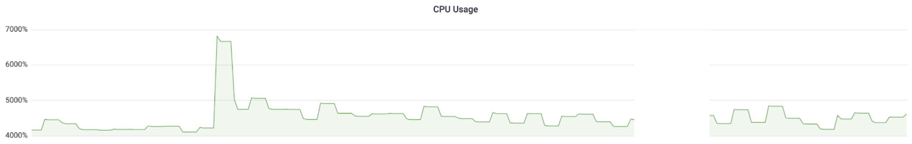
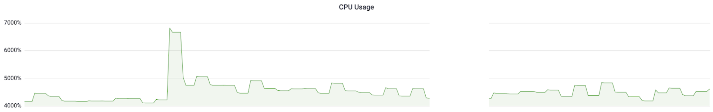
Scaling surges - Metrics surges at scale
That gives you the basics of some of the issues that you are going to start seeing as you try
to run Prometheus at scale. A whole other set of problems comes from scaling up Prometheus. The
common use case for this is when monitoring certain services and all of a sudden a service starts
producing a lot more metrics that overwhelms what a single Prometheus instance can handle.
The following slides walk you through this scenario...
The following slides walk you through this scenario...
Scaling surges - Before the metrics surge
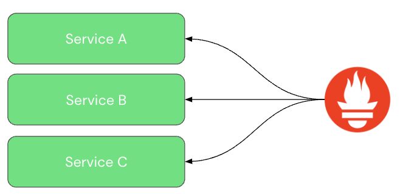
Scaling surges - Starting metrics surge
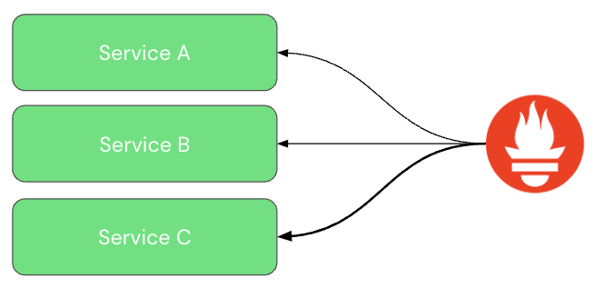
Scaling surges - Struggling with metrics surge
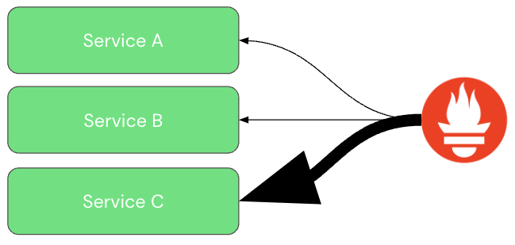
Scaling surges - Broken metrics collection
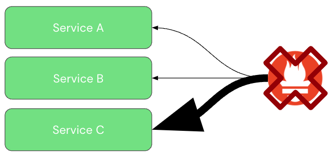
Sharding - Protecting against metrics surges
A recommended way to get around this is to dynamically create a separate Prometheus instance
when a surge starts and have that instance store and scape metrics from the offending service
only. This lets the original Prometheus instance store and scrape metrics for the other
services.
Let's see how this scenario plays out in the following slides...
Let's see how this scenario plays out in the following slides...
Sharding - Normal metrics collection day
Sharding - Metrics flood detection
Sharding - Spin up new instance
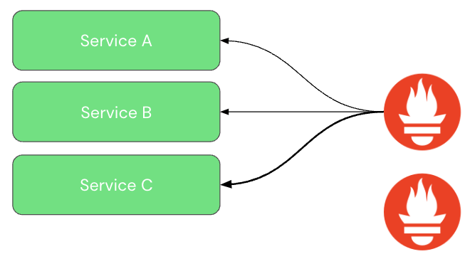
Sharding - Pass load to instance
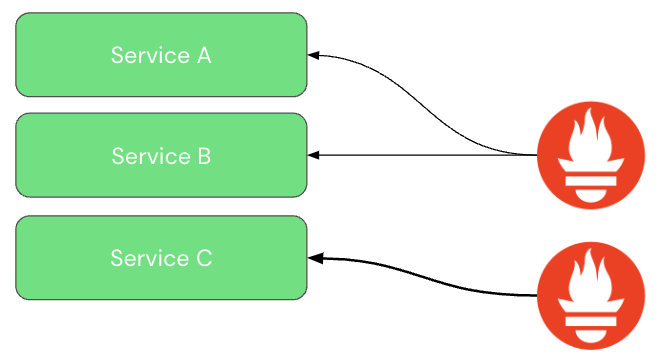
Sharding - Other services not effected
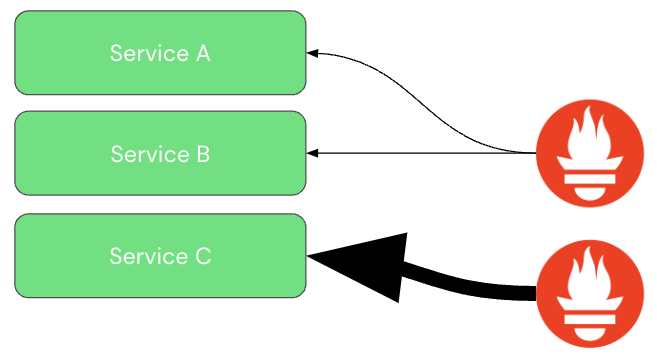
Sharding dashboards - Scaling snowballs complexity
The previous scenario will manually shard the load across a fleet of Prometheus instances as
necessary, but this gets tricky for a few reasons.
The problems start with dashboards and alerting. Let's take a look at how this becomes a problem with dashboards first...
The problems start with dashboards and alerting. Let's take a look at how this becomes a problem with dashboards first...
Sharding dashboards - Dealing with change
The issue with dashboards is that you need to tell each dashboard which Prometheus instance to
point to get the data. All the dashboards were originally pointed to the first instance as
shown here:
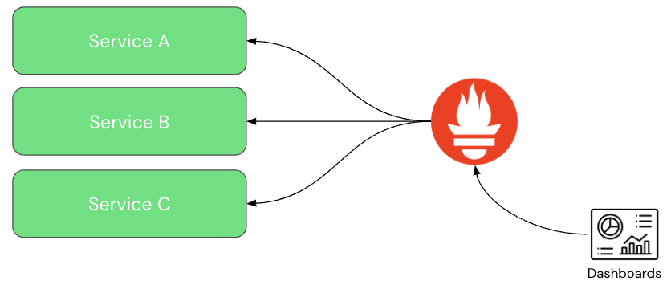
Sharding dashboards - Here comes the surge
Now the metrics surge has started:
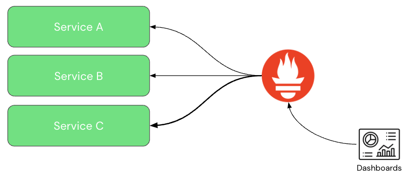
Sharding dashboards - New instance coming up
A new instance is sharded out to pick up the surging Service C:
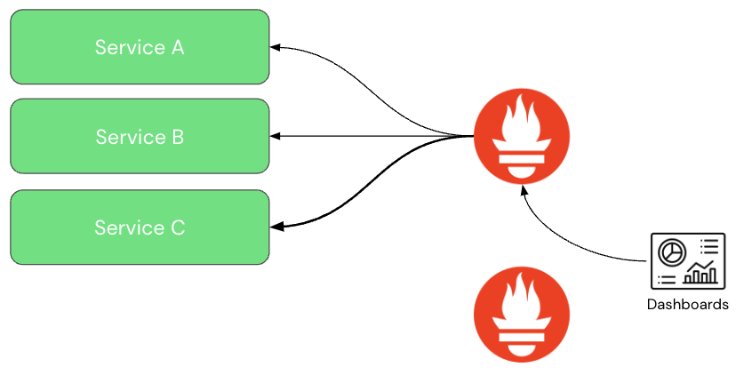
Sharding dashboards - Service C picked up
The problem is now that the data set is sharded between two Prometheus instances:
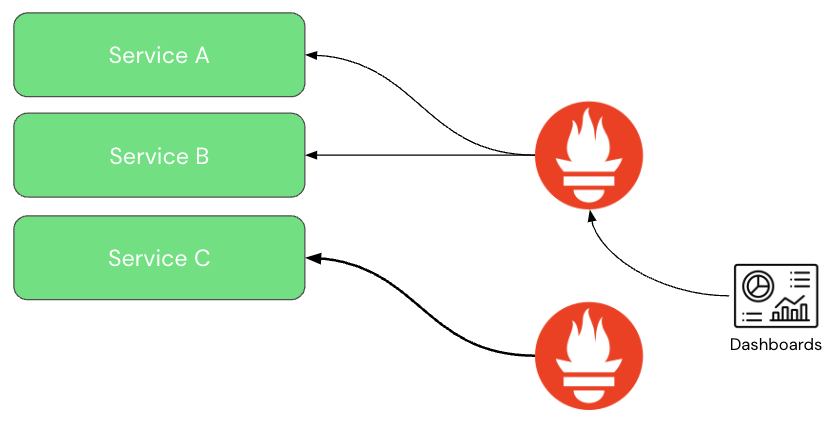
Sharding dashboards - Change dashboard sources
To start picking up the new metrics data from Service C you need to change the source in your
dashboards for where the data is coming in for all data for Service C. Another problem is that
all historical data was not transferred together with Service C, so you only get new data from
that new Prometheus instance:
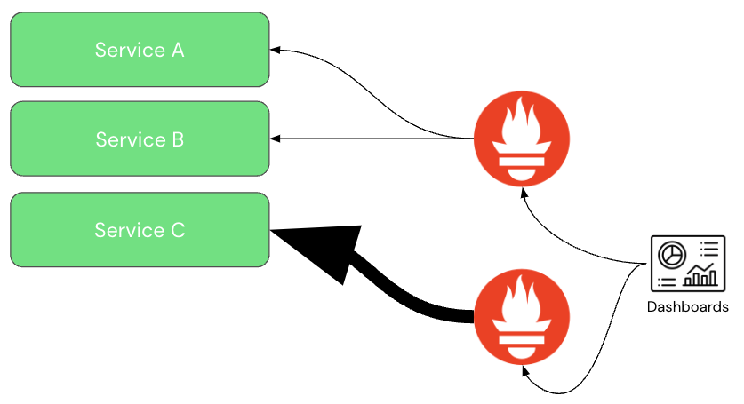
Sharding alerts - Initial alerting setup
The same problem occurs with alerting, with here the original setup that needs to be adjusted
once the data for Service C is sharded to a new Prometheus instance:
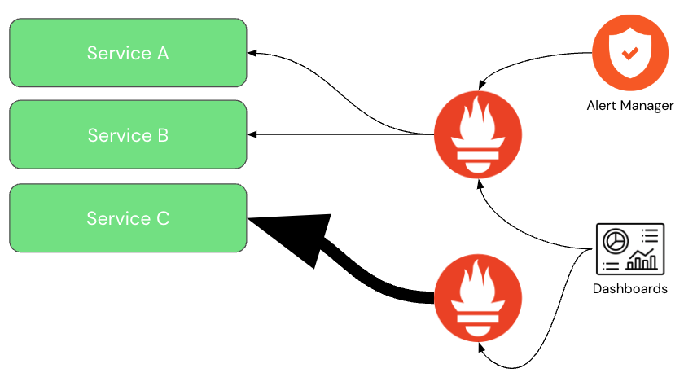
Sharding alerts - Gap in alerting history
The same problem that all historical data was not transferred together with Service C exists,
so alerting might be effected with resetting alert thresholds on new metrics data collection:
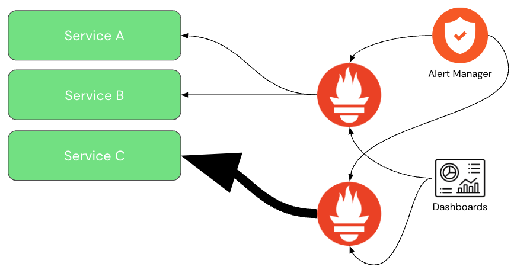
Federating - Data from two instances
When a single dashboard or alert needs data from both Prometheus instances (ie summing data
across services), you need to make sure all the data goes in a single place. So you add another
(data balancing) Prometheus instance as shown:
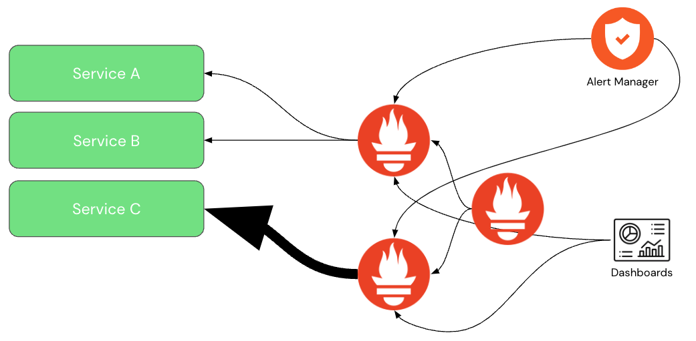
Federating - Starts getting out of hand quickly
The new instance picks a subset of data from the original instances, allowing you to query the
third instance with a subset of data from all services. The problem, however, is that you still
only have a subset of data in the federated instance. if you need more data that what’s in that
node, you need to also query and point dashboards and alert managers to the original instances.
Management of this, knowing which instance has which data, and which ones have an overlap of
data gets out of hand quickly:
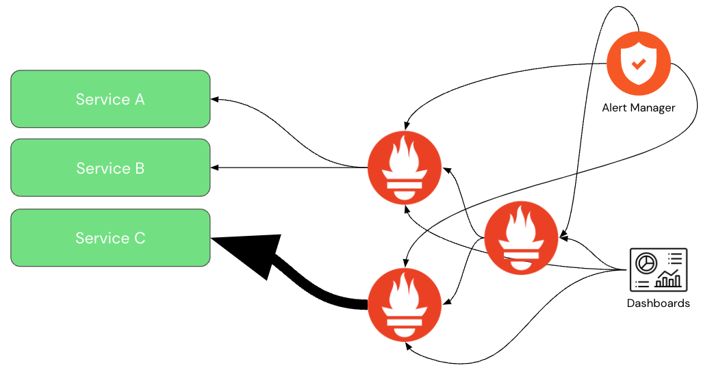
Intermezzo - Food for thought on cloud data
It should be noted before we go off even deeper into federated architectures to scale your
cloud native observability that cloud data is a problem here. We are happily scaling up our
monitoring of cloud native applications and services, which are emitting metrics and exploding
dimensions, and collecting all this metrics data.
All this data is costing us to collect and store, so it's real good idea to stop here, pause, and think about this aspect of the cloud. The costs associated can be just data, but usually it's also a matter of resources being siphoned off to maintain your expanding observability infrastructure.
Let's look at the data aspect first. To give you an idea of the amount of data being generated and why your cloud native observability will need to scale as you grow, let's look at a simple experiment on the next slide...
All this data is costing us to collect and store, so it's real good idea to stop here, pause, and think about this aspect of the cloud. The costs associated can be just data, but usually it's also a matter of resources being siphoned off to maintain your expanding observability infrastructure.
Let's look at the data aspect first. To give you an idea of the amount of data being generated and why your cloud native observability will need to scale as you grow, let's look at a simple experiment on the next slide...
Metrics data from simple hello world
An experiment found online (you can find others):
Results of data collection on a simple
hello world app on 4 node Kubernetes cluster
with Tracing, End User Metrics (EUM), Logs,
Metrics (containers / nodes):
30 days == +450 GB
(Source: The Hidden Cost of Data ObservabilityZ )
Results of data collection on a simple
hello world app on 4 node Kubernetes cluster
with Tracing, End User Metrics (EUM), Logs,
Metrics (containers / nodes):
30 days == +450 GB
(Source: The Hidden Cost of Data ObservabilityZ )
Federating - At cloud native scale
Organizations scale up into a mess of extra infrastructure and management efforts that are no
longer focused on their core business. We can’t even display long term storage in this slide...
with all this federation going on, think about the resources from your DevOps teams that are
going to be spending more time on infrastructure than on engineering tasks:
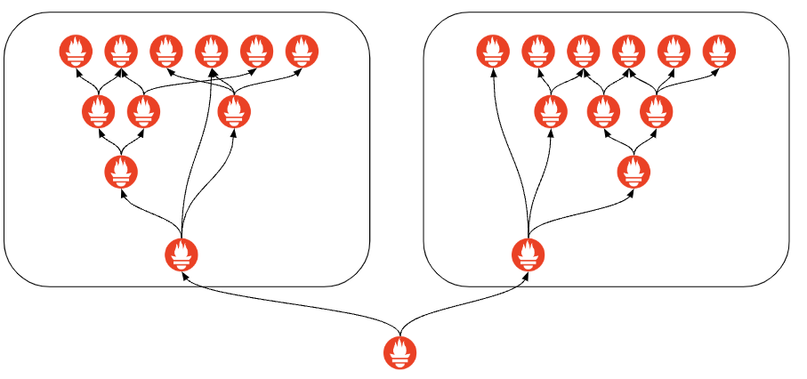
Storage - Remote storage at scale
Prometheus is aware that they did not provide any type of metrics storage at scale, so they
provided an API to allow you to plug in scalable remote storage. This does not solve the
federation issues nor does is reduce the resources needed to manage your growing
observability infrastructure. On the contrary, you've now added more complexity to your
ever-growing observability infrastructure:
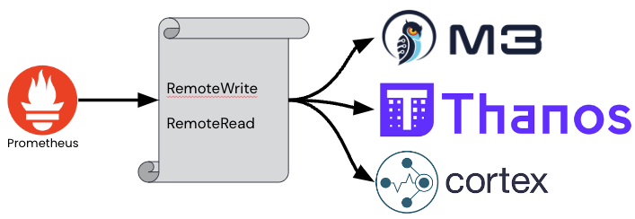
Storage - Issues to watch for at scale
Observability storage issue start to show up at scale, with some of the following being
indicators that the struggle is real to scale your observability effectively:
- Dashboard performance degrading due to high cardinality data (volume query results)
- Storage scaling with your Prometheus means more infrastructure needs
- Query performance degrades as observability infrastructure grows
- Less return on the data as it grows, so the cost is exceeding the value at scale
Reviewing - Prometheus pain at scale
- Reliability
- Not designed to handle regional failures.
- Inconsistency with high availability model.
- Scalability
- Management overhead in data storage backend.
- Federation management & configuration (very) difficult at scale.
- Efficiency
- No down sampling of metrics.
- Not efficient for long term metric storage.